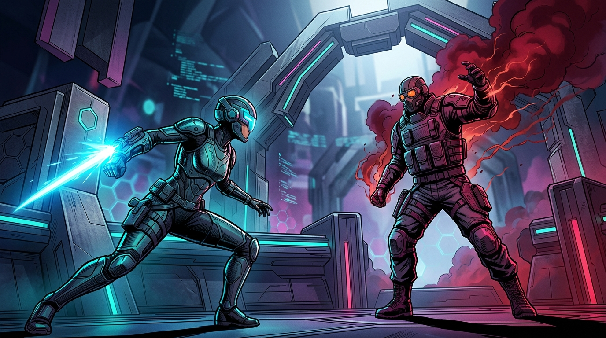

Sua conexão aguenta a ranqueada? Descubra antes de perder pontos. Can your network handle ranked? Find out before losing LP.
O teste de rota determinístico para iPhone. Sem falsas promessas de ping, sem VPNs milagrosas e sem fallback HTTP — medição real de latência UDP, jitter sob carga e perda de pacotes direto aos servidores de referência dos seus jogos. The deterministic route check for iPhone. No false ping claims, no VPN snake oil, and no generic HTTP fallbacks — real measurement of UDP latency, bufferbloat jitter, and packet loss directly to your games' reference servers.

Como o Lagcheck interpreta sua rota antes da partida How Lagcheck evaluates your route before matches
O app no iPhone avalia rajadas UDP sob estresse real. Selecione um dos 3 cenários práticos abaixo para entender como nosso veredito determinístico protege sua ranqueada: The iPhone app evaluates UDP bursts under real network stress. Select one of the 3 practical scenarios below to see how our deterministic verdict guards your ranked matches:
Os 4 Pilares da Verdade de Rede The 4 Pillars of Network Truth
Criado para quem leva a partida a sério. Sem velocímetros inflados e sem promessas vazias. Built for players who take competitive matches seriously. No inflated speed tests, no empty claims.
Veredito "Ready for Ranked" "Ready for Ranked" Verdict
Chega de calcular mentalmente se seu ping oscilante aguenta um clutch. O Lagcheck traduz a telemetria em vereditos semânticos imediatos: Pronto para Ranked, Evitaria Ranked Agora ou Condições Instáveis. Stop guessing whether your fluctuating ping will hold up during a clutch. Lagcheck translates complex telemetry into instant semantic verdicts: Ready for Ranked, Avoid Ranked Now, or Unstable Conditions.
Medição Dual-Phase (Carga Real) Dual-Phase Stress Test
Medições em repouso mentem. O Lagcheck estressa a conexão com rajadas controladas para revelar bufferbloat oculto e picos de jitter que surgem quando outra pessoa da casa abre uma live ou download. Idle tests lie. Lagcheck stresses your route with controlled packet bursts to expose hidden bufferbloat and jitter spikes that happen when someone else at home starts streaming or downloading.
Auditoria Wi-Fi e NAT RFC 5389 Wi-Fi & NAT RFC 5389 Audit
Identifica se seu iPhone está conectado em 2.4 GHz poluído em vez de 5 GHz e diagnostica tipo de NAT (Aberto, Moderado, Estrito) e CGNAT para evitar problemas graves de matchmaking e voz. Detects whether your iPhone is trapped on congested 2.4 GHz instead of 5 GHz, while auditing NAT types (Open, Moderate, Strict) and CGNAT via STUN RFC 5389 to prevent matchmaking blocks.
Sockets UDP Globais Reais Real Global UDP Sockets
Em vez de pingar servidores genéricos de provedores de internet, nos conectamos aos mesmos datacenters e protocolos usados pelos jogos: AWS GameLift, Azure PlayFab QoS e Valve A2S_INFO. Instead of pinging nearby ISP caches, we test against the exact gaming datacenters and protocols used in production: AWS GameLift, Azure PlayFab QoS, and Valve A2S_INFO.
Medidores de Banda vs Lagcheck vs VPNs Bandwidth Speedtests vs Lagcheck vs VPNs
Entenda por que medir velocidade contratada não diz se você vai perder pontos na ranqueada. Understand why measuring Mbps download doesn't tell you if you will lose match points.
| Critério de Avaliação Evaluation Criteria | Lagcheck DIAGNÓSTICO REAL REAL DIAGNOSTIC | Speedtest Tradicional Traditional Speedtest | VPNs Convencionais Typical Gaming VPNs |
|---|---|---|---|
| Protocolo de Medição Measurement Protocol | UDP Real de Jogos (Tick Rate) Real Game UDP (Tick Rate) | Download HTTP/TCP contínuo Heavy HTTP/TCP download | Túnel WireGuard/OpenVPN WireGuard/OpenVPN tunnel |
| Estresse sob Carga (Bufferbloat) Stress Test (Bufferbloat) | Sim (Repouso vs Rajadas) Yes (Idle vs Stress Bursts) | Apenas média estática Static average only | Não realiza Does not test |
| Topologia Wi-Fi e NAT Wi-Fi & NAT Topology | 2.4/5GHz + NAT 1/2/3 + CGNAT 2.4/5GHz + NAT 1/2/3 + CGNAT | Nenhuma None | Mascaramento de IP IP masking only |
| Veredito Competitivo Competitive Verdict | Pronto para Ranked claro Clear Ready for Ranked | Números soltos em Mbps Raw Mbps numbers | Promessas de "Ping 0" Unrealistic "0 Ping" claims |
| Privacidade e Anúncios Privacy & Ads | Zero contas, SwiftData local No accounts, local SwiftData | Dezenas de anúncios e cookies Heavy ads and tracking | Assinatura mensal cara Expensive monthly subscription |
Calibrado para seus jogos competitivos Calibrated for your competitive games
Rotas mapeadas para os principais ecossistemas de esports no Brasil e no mundo. Mapped routes to the leading esports ecosystems in South America and globally.
Valorant
Riot GamesCounter-Strike 2
ValveLeague of Legends
Riot Games
Fortnite
Epic / AWSEA Sports FC 25
EA SportsCoD Warzone
ActivisionApex Legends
Respawn / EA
Roblox
Roblox CorpComo Funciona em 3 Passos How It Works in 3 Steps
Do toque no ícone ao veredito de prontidão em menos de 10 segundos. From opening the app to your readiness verdict in under 10 seconds.
Abra e Escolha o Jogo Open & Pick Game
Selecione o título que você vai disputar hoje ou deixe o último jogo ativo na Home como protagonista. Select the title you are competing in today, or keep your most played game ready on Home.
Ready Check em 1 Toque 1-Tap Ready Check
O app envia rajadas UDP em repouso e sob carga controlada, mapeando jitter, perda de pacotes e topologia de NAT. The app fires UDP bursts at rest and under controlled load, diagnosing jitter, packet loss, and NAT topology.
Veredito Semântico Real Real Semantic Verdict
Receba a resposta imediata: Pronto para Ranked ou Evite Jogar Agora. Sem desculpas e sem surpresas na partida. Get the final answer instantly: Ready for Ranked or Avoid Playing Now. No surprises once the match begins.
Perguntas Frequentes Frequently Asked Questions
Respostas diretas sobre como o Lagcheck protege sua partida. Straightforward answers on how Lagcheck guards your competitive match.
O Lagcheck diminui meu ping ou funciona como uma VPN? Does Lagcheck lower my ping or act like a VPN?
Não. O Lagcheck é uma ferramenta de diagnóstico e auditoria de rota, e não uma VPN. Nós não prometemos o ping real nem vendemos a ilusão de "ping zero". O app mostra a condição honesta e real da sua rede para você não iniciar partidas ranqueadas quando sua rota ou Wi-Fi estiverem instáveis. No. Lagcheck is a diagnostic and route auditing tool, not a VPN. We do not claim zero ping or promise exact in-game ping. The app provides honest telemetry so you never start a ranked match with an unstable route or jittery Wi-Fi.
Por que o Lagcheck é mais preciso para jogos que um Speedtest comum? Why is Lagcheck more accurate for gaming than a normal Speedtest?
Medidores de velocidade tradicionais testam banda larga através de downloads pesados via HTTP/TCP em servidores locais de operadoras. Jogos online exigem rajadas de pequenos pacotes UDP com baixíssimo jitter e zero tolerância a bufferbloat. O Lagcheck reproduz o comportamento real do tráfego gamer em repouso e sob carga. Traditional speedtests measure bandwidth by downloading big files over HTTP/TCP against nearby ISP servers. Competitive online games require small UDP packet bursts with ultralow jitter and zero bufferbloat. Lagcheck simulates real gaming traffic both at rest and under stress.
O aplicativo é gratuito? Tem anúncios? Is the app free? Does it have ads?
Sim, o Lagcheck é 100% gratuito. No MVP atual, não há nenhum SDK de publicidade, login ou coleta de dados invasiva. Seu histórico de testes fica guardado exclusivamente no seu aparelho via SwiftData por até 90 dias. Yes, Lagcheck is 100% free. In our current MVP, there are no advertising SDKs, no accounts, and no invasive trackers. Your diagnostic history is kept locally on your iPhone via SwiftData for up to 90 days.
Quais dispositivos são compatíveis? Which devices are compatible?
O Lagcheck foi concebido especificamente para iPhone e requer iOS 17 ou superior para utilizar os recursos de sockets UDP avançados e SwiftData. Lagcheck is designed specifically for iPhone and requires iOS 17 or later to leverage high-precision UDP sockets and native SwiftData storage.
O app funciona em Wi-Fi e dados móveis (4G/5G)? Does the app work on Wi-Fi and mobile data (4G/5G)?
Sim. Em Wi-Fi, o app audita a frequência (2.4 GHz vs 5 GHz) e topologia local. Em rede móvel, o teste sob estresse exige consentimento explícito para preservar sua franquia de dados. Yes. On Wi-Fi, the app audits frequency (2.4 GHz vs 5 GHz) and local topology. On mobile networks, stress testing requires explicit consent to protect your data plan.